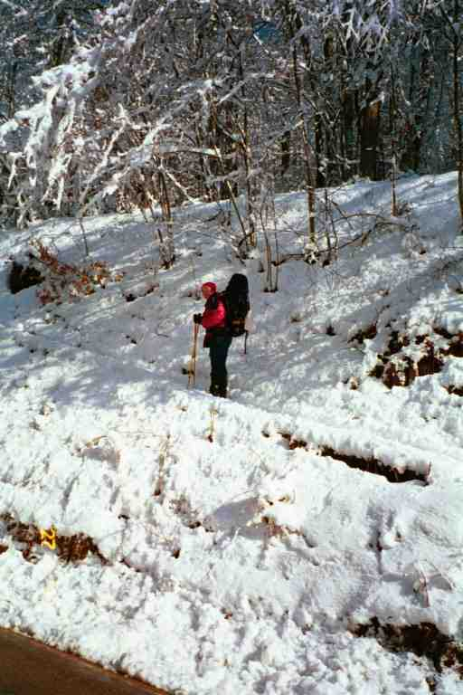

The one mile walk on old US 64 to Rainbow Springs Campground started up hill until we reached the crest and then it wound its way slowly downwards. There were a few RSC mileage signs posted on trees to re-assure us that we were on the right track. The snow was now wet and heavy and was about six inches deep on the ground. When we reached the campground, we had been walking two hours without a break. We turned into the campground with a sense of relief. Their website: http://www.dnet.net/rainbowsprings/
It was about a hundred feet down the lane to the campground store and office. It was set back against the hill, with its front entrance about 8 feet above the road. A narrow veranda ran along the front with a steep wooden stairway at each end. We climbed the stairs, removed our packs, dug into the lids for our money and went inside. The store counter ran along the left wall from the front to the back of the store. The cash was set up at the left of the counter, next to the front window. A woman smoking a cigarette sat behind the cash. She appeared ageless, but likely late fifties. A tall man of about the same age stood behind the other end of the counter near what I presumed was the entrance to their quarters, above the store. There were a few people, obviously hikers, including Michigan Man, sitting on stools or standing around.
I decided to start off on the right foot because of the bad things I had heard about this place. I put on my best smile and asked about accommodations. The cabins were all taken (at $55 for two of us, we likely would not have taken one anyway), but there was still room in the bunk house at $12 each. She took my credit card impression and told me I could run up a tab. Surprisingly, the tabs were filed under hikers' trail names. I introduced us and she said that they were Jesnine (sp) and Buddy. We were given the directions to the bunk house: "Go past the wash house and follow the white painted marks on the way down the road." They had apparently put white marks on a few metal posts to imitate AT trail blazes. It seemed like a good idea.
We went past the wash house and promptly got lost. We backtracked and then proceeded through the snow down a road that switched steeply back and forth a few times. At the base there were two small buildings and we approached a dilapidated wooden structure that more closely met my definition of bunk house. We knocked on the door and were welcomed by a few hikers who asked us to shake off the snow before coming in. I can understand why. We had accumulated at least an inch of snow on our packs, coats and hats during our walk from the store.
We stepped into a small one room rectangular building. There was a large low window in the far wall. Bunks had been built onto both side walls starting next to the window. The bunks were two long and three high on each wall, for a total of 12 sleeping spaces. There were a number of kitchen chairs and a round kitchen table in the space in the middle of the room between the bunks. Along the wall to our right was a refrigerator, a few hooks with coats on them and along the floor a little pile of wood and in the corner was a wood stove. An assortment of clothes were draped in front of the stove over chairs and on an old wooden clothes dryer. There was a collection of boots in front of the stove. The stove was the only source of heat. Fortunately, it had an electric fan that pushed the air into the room. The only source of light was the window and two bare bulbs hanging from the ceiling.
The hikers introduced themselves. There was FOODBAG, COURT DOG, TIN MAN and PACE. The fifth hiker staying in here was MICHIGAN MAN but he was up at the store. MA took the last available bottom level bunk, on the left wall next to the window, and I took the bunk above her. The bunks were simply wooden frames with a sleeping platform and a mattress on top. None of the mattresses were the same. They were different colours and thicknesses. Some were too wide for the platform and hung over the edge, and many had holes. Bedding was not included so we had to use our sleeping bags.....thank god.
We emptied our back packs, placing our sleeping bags, clothes and small personal items on the bed, and the rest on the floor next to our bunks. The big concern in close quarters on the trail is not theft, but simply misplacing things or getting stuff mixed up. Many people had the same kinds of stoves and water filters which could lead to confusion. Everyone had a lot of small items that could be easily misplaced, especially in our present situation. To make it worse, people had their damp clothes and boots hung all around the stove, and dishes and cups cluttered the table.
MA changed into dry clothes by one of the normal methods: discreetly on her bed, concealed by her sleeping bag. People changed in this way or within their sleeping bags in cold weather. In warm weather, hikers changed less often and could comfortably get changed in the woods. Getting changed in your bag was an acquired technique and there were never any problems as everyone respected other's privacy. Sometimes, a lady would simply ask the men to turn around for a second.
Bryson's book was highly critical of the chili served at the store, so we asked about it. TIN MAN said that he had been here since yesterday and had 3 bowls so far. Others also said that it was good. However, they said that the oven-baked pizza mentioned in the Thru-Hikers Companion was actually heated frozen pizza. We went back out in the storm and headed up the hill to the store. At the top of the hill, we stopped at the wash house, which was the only available washroom on the site. We were hoping that we would not need it in the middle of the night. It would be a long cold walk in an emergency.
At the store we ordered chili. "Put it on my tab." I said. Jesnine was in charge of the money, but Buddy was the waiter. He turned slowly around and got two extra large foam cups. He then slowly dipped a ladle into a slow cooker and slowly filled both cups. He slowly placed the cups on a little tray, with a roll and slowly brought it to us. It was really good chili: spicy with lots of meat, and there was lots of it. As we ate, we watched Buddy start making a new batch. Many people we met later in our trip claimed that it was canned chili, however, it did not appear so to us. We checked out the store and found they had a good selection of hiker food and some hiker equipment at a fair price.
It is likely that many hikers prejudged Jesnine and Buddy because of Bryson's book and it is also likely that the two of them were leery of hikers since the book was published. However, Jesnine's gruff manner did not help her. Jesnine sat in her corner, surveying her realm, taking in everything and seeming to be very nosy. From her spot she could see all that was going on inside and out. It seemed that they could not relate to the hiker community and found them dirty (which was true). Many said that they would say things about certain hikers after they left. We later found out that, that very morning, SUNDOG and BADGER had shown up and had an encounter with Jesnine and they had quickly left. Ma and I did not have any problems with them.
We met ELF who was MICHIGAN MAN's hiking partner. They had teamed up on the first day on top of Springer Mountain when they got caught in the ice storm. She was staying alone in a cabin here. We would hike on and off with her until Pearisburgh Virginia. We also met John who was also staying in a cabin. We had met him once before at Tray Mountain Shelter, where he had got back on the trail after an absence of a couple of months. We would not see him again.
We went outside to call our daughter, Natasha. We were in North Carolina telling her about a snow storm and she was in Canada with no snow. As I was telling her about our experience, a big pile of snow fell on me. I looked up and noticed that the camp road was lined with tall trees all laden with wet heavy snow. What a beautiful site. We went back to the bunk house and sat around the table talking to our bunk mates.
PACE was sorting through his food supplies and gave us some powdered Kool-Aid. He was in his late twenties and was from Alabama. He had sold his graphic/printing business to come out on the trail. He was likely one of those out to find himself. He was a very friendly likeable young man and had a good attitude about life. We would meet him a few more times. He has a journal at trailplace.com under the name CHANGING PACE but had already shortened his name to PACE.
COURT DOG was about 35 and was currently living in Ohio. His name is derived from his last name, Courtney. He said he had been a financial comptroller for a shoe company. He quit his job when he had saved enough to secure his retirement years. Now he had the luxury of working at jobs that he liked. One of his ideas was to work on a fishing boat in Alaska. He was a quiet, soft spoken, caring person. He was a good listener, as is MA, and they both hit it off. COURT DOG would figure importantly in our hike, and would be present on our last day on the trail.
FOODBAG got his name from the two big bags of food he was carrying at the start of his hike. He would also figure prominently in our hike. His real name was John Leclaire, and he could speak some French. Although he had not spoken French in a long time, he did really well, and practiced a lot with MA. He was in his early forties and had a varied career. His latest was as a manager of an ice arena in the Boston area where he lived. He was a friendly funny guy who got along with everyone. When we hiked with him later on in our hike, he would talk a lot about his wife who was a classical saxophone player. It did not appear that they had been married too long and he was crazy about her. FOODBAG said he was tired and had decided to spend the next day here. He figured that the storm would be over so he would be alone, and would get to read all the 15 year old National Geographics and Readers Digests in peace.
TIN MAN was in his fifties. He seemed to be very fit, however he had foot problems. He had blisters and he also had problems getting a boot that would fit him well because the front of his foot was high. He seemed to spend most of his time taking care of his feet and talking about feet and boots. He had tried various boots and inserts, and experimented with different methods of tying his laces. His latest plan was to use two laces per boot and tie the top and bottom separately. He came back to the bunk house with his fourth cup of chili in the early afternoon, and later finished half of PACE's cup of chili.
In the early afternoon, everything suddenly went quiet. We looked around and then realized that the radio in the corner had stopped playing. The power was off. During the course of the afternoon, the building got a little cooler, since the fan on the stove was not working. There was a generator for power at the store but it did not supply the bunk house, the cabins, the wash house or the laundry room. We would not be able to take a hot shower or do our planned laundry. One hiker was worse off than us; he had a load in the washer when the power went. Because of our remote location and the weather, it could be some time before power was restored. Luckily it was back on within a few hours.
I went back up to the store to arrange with Buddy to get a ride back to the trail the next morning. Other hikers warned me not to count on it. This morning he was supposed to drive a few hikers but could not get up the snow covered hill because he did not have snow tires.
We finally got up our courage and went to have a shower in the wash house. The water was warm but the building was not heated. It was very cold and damp and I got changed quickly on the cold concrete floor. We returned to the bunk house and boiled water on the wood stove and made yet another Lipton meal. Around 8 o'clock, just before turning in, we made another trip to the toilet. On the way we met a couple of hikers coming down the hill . They were carrying a pizza and asked directions to the bunk house.
In the bunk house they told their story. She was a small quiet young girl and her boyfriend was quite talkative. They had hiked about 17 miles that day and incredibly had gone up Albert Mountain in the snow storm. The more the day went, the wetter they got and the colder they got. They were getting tired but were afraid to stop. When you stop in such a situation, you have to worry about hypothermia. You have to put up a shelter quickly and change into dry warm clothes and heat up something warm to eat or drink. This can be very difficult to do when the weather is bad. So they kept walking, getting more tired. They finally arrived at Rock Gap shelter, (the shelter we stayed at the previous night), where there was already a crowd. Still afraid of stopping, they pressed on in the dark and finally got to Rainbow Springs. The store was closed but they managed to convince Buddy to open up and heat a pizza for them.
As the story unfolded, the girl took off her wet outer clothes and MICHIGAN MAN noticed that she was shivering badly. He wrapped her in a blanket he carried and put her in front of the fire. This was a vivid reminder that it can be dangerous out on the trail..
We are not sure of the young man's name but it may have been Brian. The young lady's name was Liz and she later became the Gourmet Hiker. The name was appropriate. They showed everyone their little portable kitchen containing a spice section and the food they had prepared and sent to themselves. They were all fancy meals.
As I lay on my bunk that night, I noticed that the building was not insulated. In fact there was no inner wall, just the studs, and there were spaces between some of the planks. Not a great place but the company was good.
The next morning we got ready and went up to the store. A few of the others had got up a lot earlier and had hiked back to the trail. At the store, we had a home made pastry heated in the microwave. We watched Buddy slowly do his morning counter chores, and then slowly go out and clean off his truck and start it up. He came back in and puttered around and then told us it was time to go. We got in the back of the truck with ELF and MICHIGAN MAN and headed up the road to the trail.
The attached picture of MA is taken from the road as she starts back up the trail

*************************
Jesnine has given permission to add this statement from an email that she sent us.
Sorry, Buddy does not make the chili. Trust me. LOL I make it from ground sirloin, fresh green peppers, etc. Buddy does dish it up when I'm at the register. No in 17 yrs. we are not offended by dirty hikers. Fortunately they all look and smell alike. In 2000, we put eggshell mattresses over other mattresses, with washable covers. Sorry if I seemed abrupt, but when a snowstorm hits, it has always been our fault, as we have changed the hikers intineraries. Yes, I do have to watch over the store, no, it's not from my realm, but with 8-10 hikers on "TABS" I try to make it easy on the hiker and let them check out all at one time. And yes, I do have to watch., as it is only the two of us, we are not like Walmart etc. who have surveillance cameras and security guards through out the store, thank goodness. We are sorry the power was out. Thanks for staying with us, wish could have made your stay more pleasant.This is not to sound gruff, it is sincere.
And yes, Buddy and I do work well together.